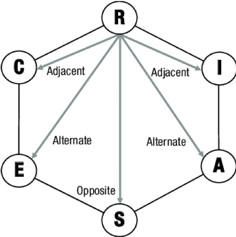

RIASEC Personality Types
It’s a type theory of personality that looks specifically at careers and vocational choice. Holland proposed that there are six unique personality types, which are determined by our interests and how we approach life situations.
How does the test relate to us
It is proposed that our career choice and occupational preference is an expression of our personality. The theory proposes that we will find different environments more to our liking, and that we will work best in environments that match our personality and preference.
Once we have identified our unique personality type, we can find a career to match them. As we can show similarities to two or three areas, it is a useful tool to narrow down our career search. Finding the ideal environment to match our personality types means we are more likely to be satisfied and successful. Most career counselors will recommend that you give primary consideration to careers that most closely align with your top two or three codes, as this will result in a better fit and less friction between your personality/interests and the nature of the career you have chosen.
Realistic 🔨
Realistic types (doers) are those who like to work with “things”. They tend to adopt a concrete approach to problem solving and can often be assertive, competitive and interested in activities that require motor coordination, skill and strength.
Some Sector Skill Councils in India that may be associated with the Realistic personality type include:
- Automotive Skills Development Council (ASDC)
- Agriculture Skill Council of India (ASCI)
- Construction Sector Skill Council
- Capital Goods Skill Council
- Electronics Sector Skill Council of India (ESSCI)
- Iron and Steel Sector Skill Council
- Power Sector Skill Council
- Rubber Skill Development Council (RSDC)
These Sector Skill Councils focus on industries that involve practical, hands-on work and may offer training and certification programs for job roles that are well-suited for Realistic types.
Career 🔨
According to Holland's Occupational Themes, some job roles that are suitable for people with a realistic personality include:
- Mechanic
- Electrician
- Carpenter
- Welder
- Farmer
- Landscaper
- Surveyor
- Engineer
- Pilot
- Firefighter
Vocational Job roles 🔨
Vocational courses aligning with Realistic Personality Types are:
| Sector | Job Role | Grade | QP Code |
|---|---|---|---|
| Apparels | Hand Embroiderer (Addawala) | IX - X | AMH/Q1010 |
| Automotive | Electric Vehicle Service Assistant | IX - X | ASC/Q1435 |
| Beauty & Wellness | Assistant Beauty Wellness Consultant | IX - X | BWS/Q4001 |
| Construction | Assistant Mason | IX - X | CON/Q0102 |
| Electronics | Junior Field Technician Home Appliances | IX - X | ELE/Q3117 |
| Healthcare | Home Health Aide - Trainee | IX - X | HSS/Q5106 |
| IT-ITeS | Domestic Data Entry Operator | IX - X | SSC/Q2212 |
| Retail | Retail Store Operations Assistant | IX - X | RAS/Q0101 |
| Security | Security Guard | IX - X | MEP/Q7101 |
| Tourism & Hospitality | Housekeeping Trainee | IX - X | THC/Q0209 |
Investigative 🔬
Investigative types (thinkers) are those who like to work with “ideas”. They tend to adopt an analytical approach to problem solving and can often be intellectual, curious and interested in activities that require research, analysis and problem-solving.
Some Sector Skill Councils in India that may be associated with the Investigative personality type include:
- Life Sciences Sector Skill Development Council
- Food Industry Capacity and Skill Initiative (FICSI)
- Instrumentation Automation Skills Council
These Sector Skill Councils focus on industries that involve research, analysis, and problem-solving and may offer training and certification programs for job roles that are well-suited for Investigative types.
Career 🔬
According to Holland's Occupational Themes, some job roles that are suitable for people with a investigative personality include:
- Political Scientist
- Computer or Information Research Scientist
- Aerospace Engineer
- Optometrist
- Nuclear Engineer
- Software Developer
- Economist
- Chemical Engineer
- Physician or Surgeon
- Dentist 2
Vocational Job roles 🔬
Vocational courses aligning with Investigative Personality Types are:
| Sector | Job Role | Grade | QP Code |
|---|---|---|---|
| Agriculture | Solanaceous Crop Cultivator | IX - X | (AGR/Q0402) |
| Automotive | Electric Vehicle Service Assistant | IX - X | (ASC/Q1435) |
| Construction | Assistant Mason | IX - X | (CON/Q0102) |
| Electronics | Field Technician Other Home Appliances | IX - X | (ELE/Q3104) |
| Healthcare | Home Health Aide - Trainee | IX - X | (HSS/Q5106) |
| IT-ITeS | Domestic Data Entry Operator | IX - X | (SSC/Q2212) |
| Media & Entertainment | Story Board Artist | IX - X | (MES/Q0507) |
| Physical Education | Physical Education Assistant (Early Years) | IX - X | (SPF/Q4004) |
| Plumbing | Assistant Plumber General | IX - X | (PSC/Q0102) |
| Telecom | Optical Fiber Splicer | IX - X | (TEL/Q6400) |
Artistic 🎨
Artistic types (creators) are those who like to work with “forms, designs and patterns”. They tend to adopt a creative approach to problem solving and can often be imaginative, original and interested in activities that require self-expression.
Some Sector Skill Councils in India that may be associated with the Artistic personality type include:
Career 🎨
According to Holland's Occupational Themes, some job roles that are suitable for people with a artistic personality include:
- Editor
- Drafter
- Musician or Singer
- Music Director or Composer
- Craft or Fine Artist
- Graphic Designer
- Art Director
- Architect
- Technical Writer
- Multimedia Artist or Animator
Vocational Job roles 🎨
Vocational courses aligning with Artistic Personality Types are:
| Sector | Job Role | Grade | QP Code |
|---|---|---|---|
| Media & Entertainment | Roto Artist | XI - XII | MES/Q3504 |
| Media & Entertainment | Texturing Artist | XI - XII | MES/Q2503 |
| Apparels | Assistant Fashion Designer | XI - XII | AMH/Q1210 |
| Beauty & Wellness | Beauty Therapist | XI - XII | BWS/Q0102 |
| Beauty & Wellness | Hair Stylist | XI - XII | BWS/Q0202 |
| Tourism & Hospitality | Food and Beverage Services Associate | XI - XII | THC/Q0301 |
Enterprising 💼
Enterprising types (persuaders) are those who like to work with “data”. They tend to adopt a persuasive approach to problem solving and can often be ambitious, confident and interested in activities that require leadership.
Some Sector Skill Councils in India that may be associated with the Enterprising personality type include:
Career 💼
According to Holland's Occupational Themes, some job roles that are suitable for people with a enterprising personality include:
- Sales Representative
- Marketing Manager
- Politician
- Business Executive
- Entrepreneur
- Real Estate Agent
- Advertising Executive
- Public Relations Specialist
- Lawyer
- Financial Advisor
Vocational Job roles 💼
Vocational courses aligning with Artistic Personality Types are:
| Sector | Job Role | Grade | QP Code |
|---|---|---|---|
| Agriculture | Dairy Farmer/Entrepreneur | XI-XII | (AGR/Q4101) |
| Agriculture | Floriculturist (Open Cultivation) | XI-XII | (AGR/Q0701) |
| Agriculture | Floriculturist – Protected Cultivation | XI-XII | (AGR/Q0702) |
| Agriculture | Organic Grower | XI-XII | (AGR/Q1201) |
| Banking, Financial Services & Insurance (BFSI) | Business Correspondent/ Facilitator | XI-XII | (BSC/Q8401) |
| Retail | Individual Sales Professional | XI-XII | (RAS/Q0201) |
| Retail | Retail Sales Associate | XI-XII | (RAS/Q0104) |
| Retail | Seller Activation Executive | XI-XII | (RAS/Q0103) |
Conventional 📊
Conventional types (organizers) are those who like to work with “numbers, records or machines”. They tend to adopt an organized approach to problem solving and can often be orderly, efficient and interested in activities that require attention to detail.
Some Sector Skill Councils in India that may be associated with the Conventional personality type include:
Career 📊
According to Holland's Occupational Themes, some job roles that are suitable for people with a enterprising personality include:
- Accountant
- Auditor
- Financial Analyst
- Loan Officer
- Tax Examiner
- Revenue Agent
- Collector
- Budget Analyst
- Insurance Underwriter
- Administrative Assistant
Vocational Job roles 📊
Vocational courses aligning with Conventional Personality Types are:
| Sector | Job Role | Grade | QP Code |
|---|---|---|---|
| Agriculture | Small Poultry Farmer | XI-XII | AGR/Q4306 |
| Apparel | Self Employed Tailor | XI-XII | AMH/Q1947 |
| BFSI | Business Correspondent/Facilitator | XI-XII | BSC/Q8401 |
| Beauty & Wellness | Beauty Therapist | XI-XII | BWS/Q0102 |
| Construction | General Mason | XI-XII | CON/Q0103 |
| Electronics | Field Technician Computing and Peripherals | XI-XII | ELE/Q4601 |
| Healthcare | General Duty Assistant – Trainee | XI-XII | HSS/Q5107 |
| IT-ITeS | Domestic Biometric Data Operator | XI-XII | SSC/Q2213 |
| Logistics | Documentation Assistant | XI-XII | LSC/Q1122 |
| Retail | Retail Sales Associate | XI-XII | RAS/Q0104 |
| Security | CCTV Video Footage Auditor | XI-XII | MEP/Q7205 |
| Telecom | Optical Fiber Technician | XI-XII | TEL/Q6401 |
| Tourism & Hospitality | Counter Sales Executive | XI-XII | THC/Q2903 |
Social 👥
Social types (helpers) are those who like to work with “people”. They tend to adopt a supportive approach to problem solving and can often be patient, understanding and interested in activities that require helping others.
Some Sector Skill Councils in India that may be associated with the Social personality type include:
Career 👥
According to Holland's Occupational Themes, some job roles that are suitable for people with a social personality include:
Vocational Job roles 👥
Vocational courses aligning with Social Personality Types are: